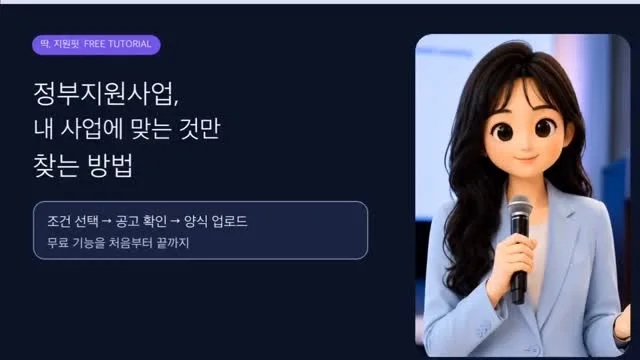
지원사업 안내 튜토리얼
서비스 화면과 아바타 진행자를 함께 배치한 안내 영상.
오예림 강사가 만든 영상의 대표 장면과 제작 당시의 메모를 함께 담았습니다.

서비스 화면과 아바타 진행자를 함께 배치한 안내 영상.
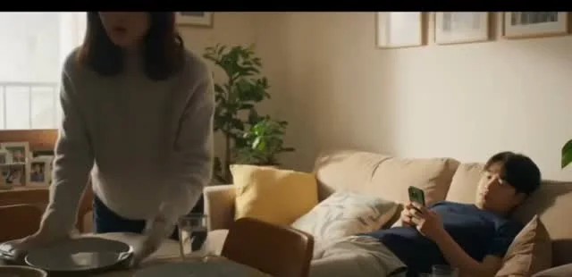
@uare_story의 이야기를 인용해 광고 장면으로 재구성한 연습.
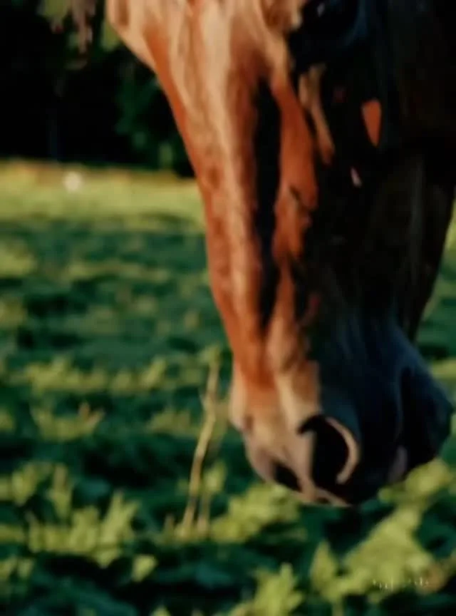
동물 장면에 AI 음성을 더한 더빙 실습.
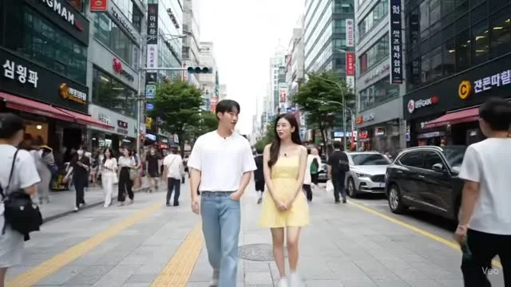
@hipzenith의 프롬프트를 활용해 재구성한 영상.
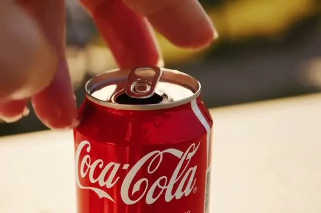
같은 날 두 게시물에 올린 개인 제작 연습. 캔을 여는 손과 해변의 캔을 각각 보여준다.
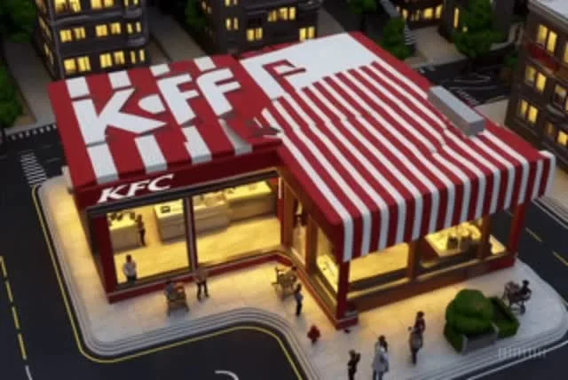
KFC 등 네 브랜드를 소재로 한 개인 제작 실습 중 매장 장면.
캐릭터 장면에서 한글 자막이 깨진 결과까지 공유한 제작 기록.
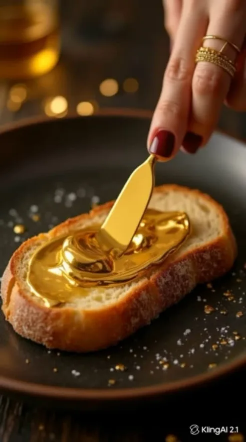
브랜드용 영상을 직접 만들어 보고 제작법을 소개한 게시물.
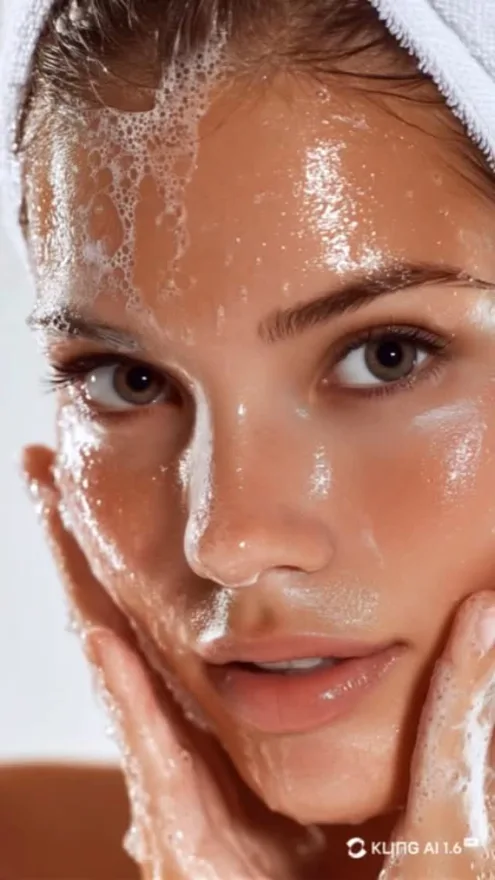
물기 어린 얼굴을 클로즈업한 뷰티 제품 영상 실습.
한국어 대사를 넣었을 때 예상과 다르게 발음된 결과를 담은 실험.
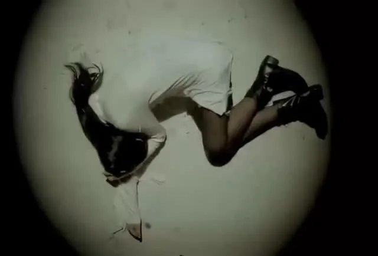
메가크루 무대의 움직임과 촬영 구도를 AI로 재현한 연습.
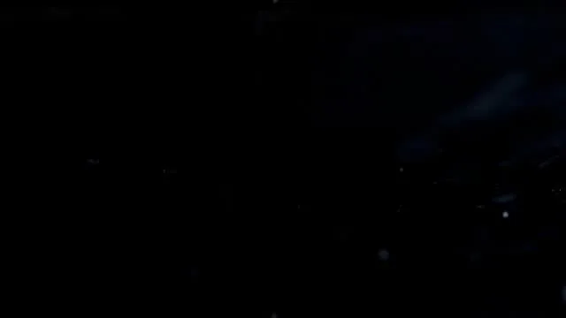
주얼리 제품 강의 뒤 만든 다이아몬드 낙하 영상. 게시물에서 가져온 이미지는 보석이 나타나기 전의 어두운 도입 화면입니다.
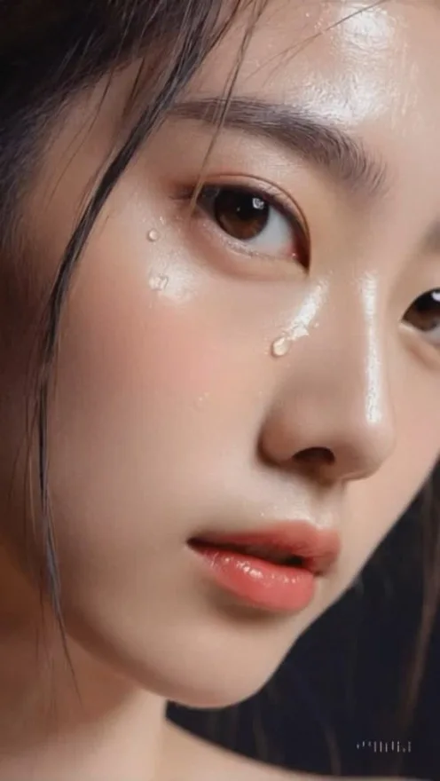
카메라 촬영 없이 제작한 인물 장면과 제작 과정을 소개한 게시물.
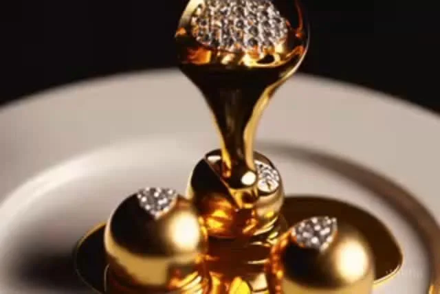
직접 사용한 프롬프트와 함께 올린 금빛 액체의 클로즈업.
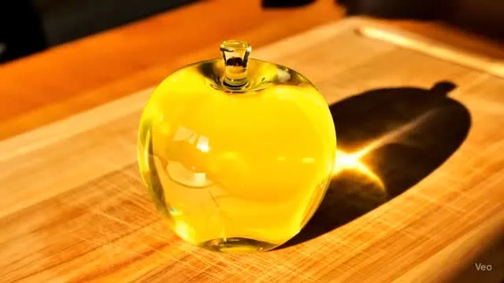
Veo 3로 만든 노란 과일 장면과 프롬프트를 공유한 연습.
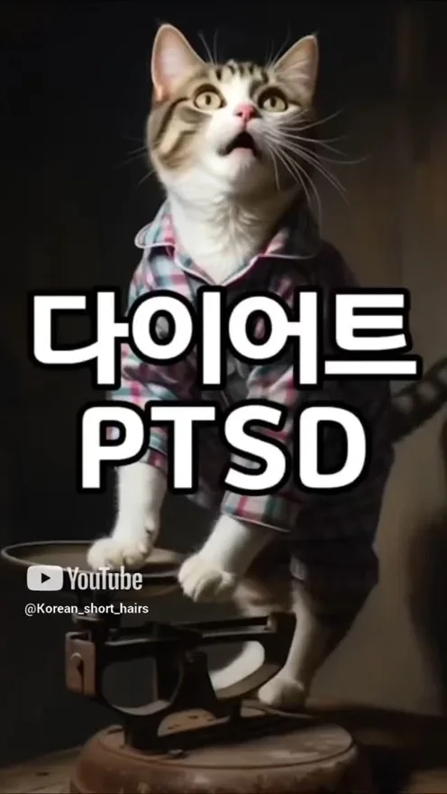
ChatGPT로 가사와 이미지를 만들고 Suno로 곡을 제작한 뒤 CapCut으로 편집한 영상.